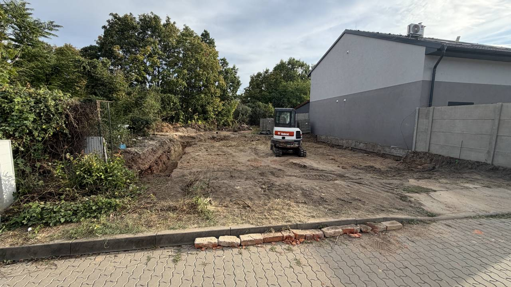
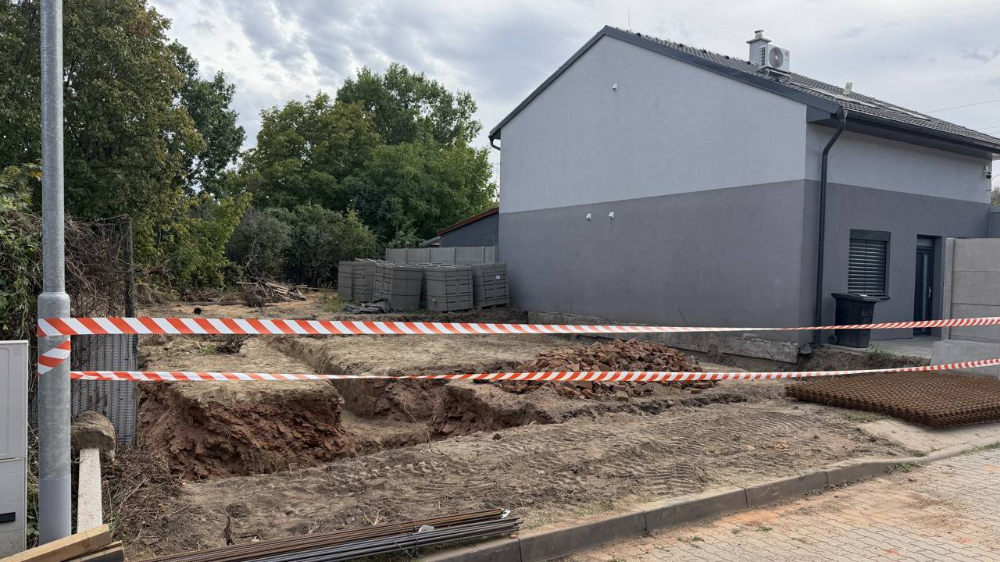

← Zpět na Stavbu domu
Stavba domu
Fotky ze stavby
Fotodokumentace postupu výstavby, seřazená chronologicky. Klikni na fotku pro
zvětšení. Postupně budeme doplňovat další.
2. 9. 2026

Minibagr Bobcat na pozemku – začíná výkop první základové rýhy.
3. 9. 2026

Vykopané základové rýhy, výstražná páska a připravené svazky armovací kari sítě.
Zdroj: fotky ze složky „Fotky stavby" na Google Drive.